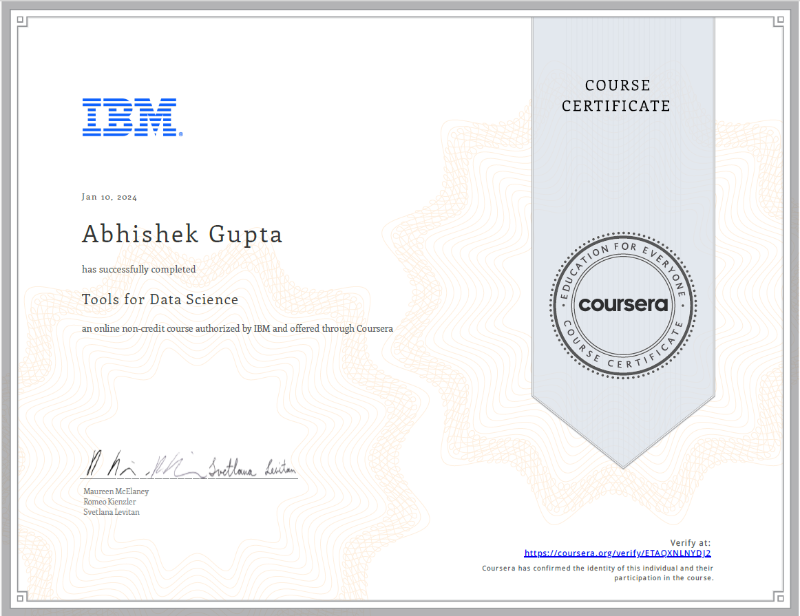
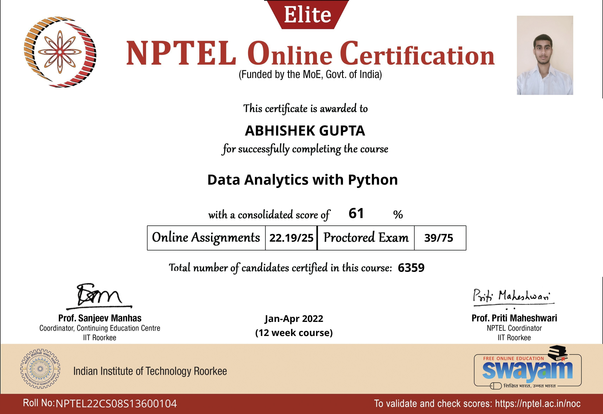
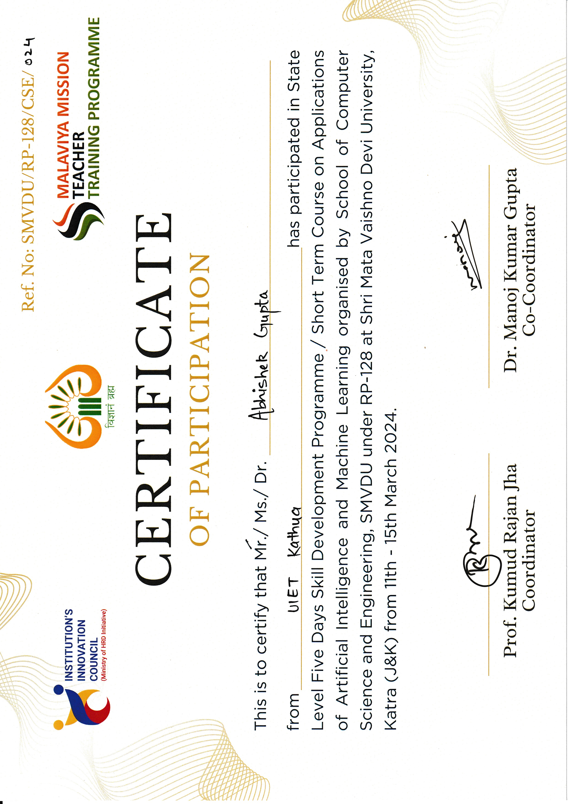
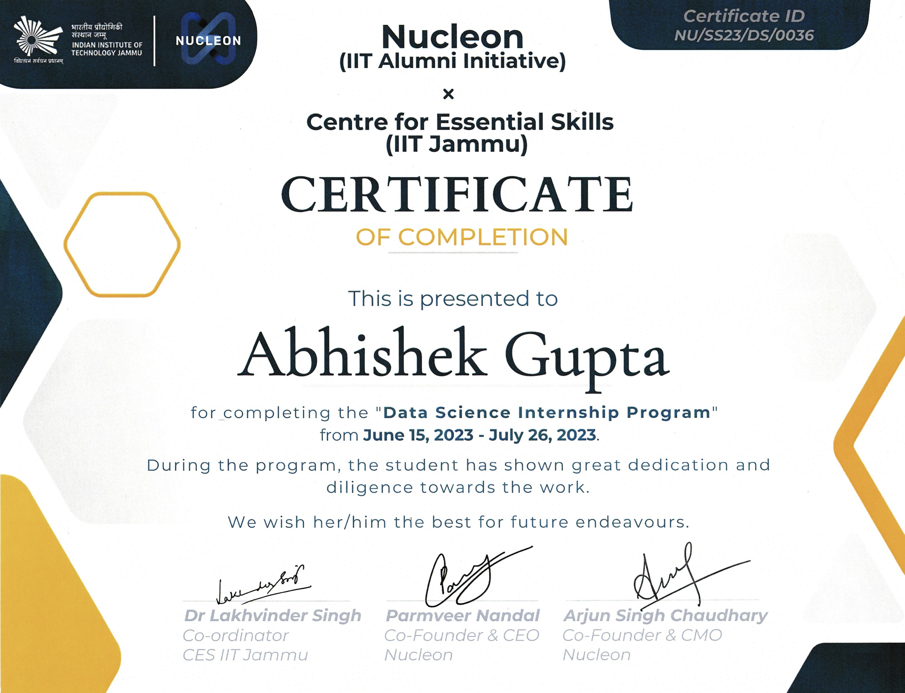
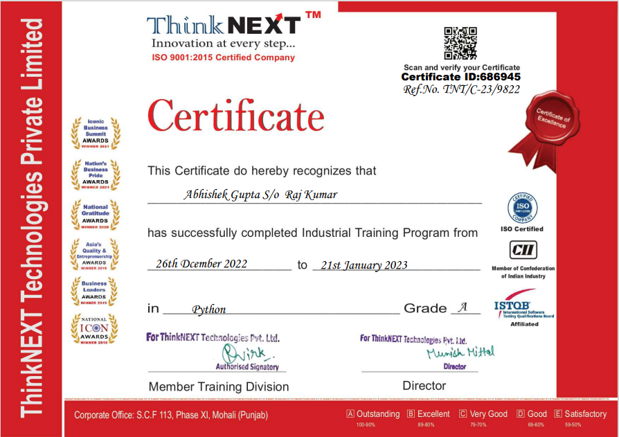
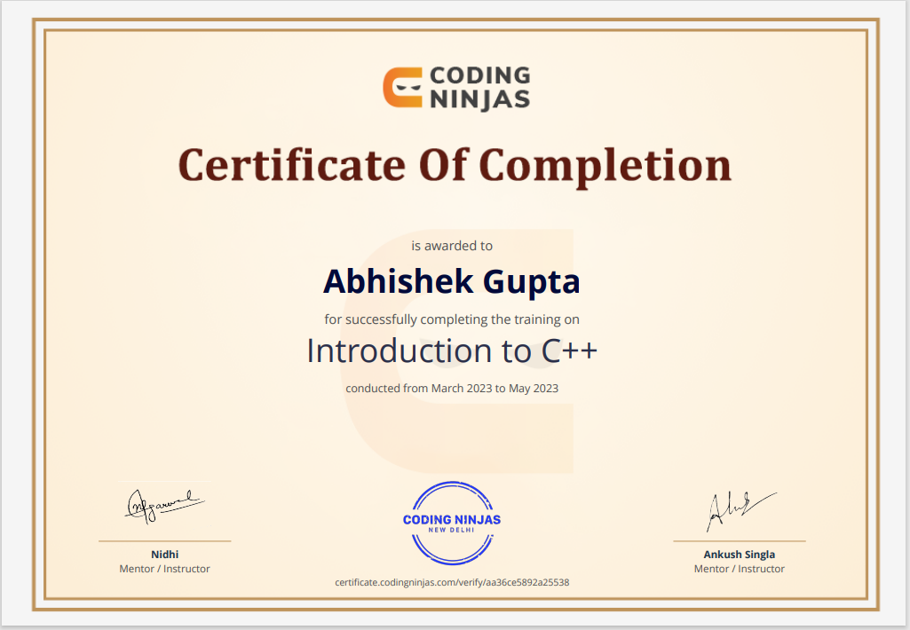
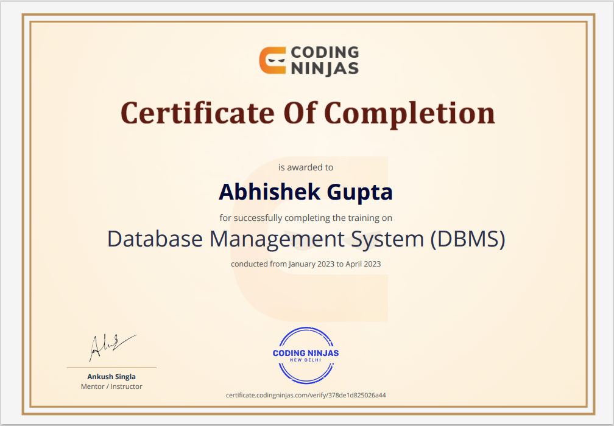

Learning beyond
the classroom.
A selected collection of courses and credentials. Open any certificate to view the original image.

IBM / CourseraTools for Data Science ↗
NPTELData Analytics with Python ↗
COURSE CERTIFICATEArtificial Intelligence & Machine Learning ↗
COURSE CERTIFICATEData Science ↗
PYTHONPython Certificate ↗IBM / COURSERATools for Data Science ↗
C++C++ Certificate ↗
DATABASESDBMS Completion ↗Some image files may be course completion, excellence, or certificate variants from the original website. Labels can be refined after reviewing each credential.